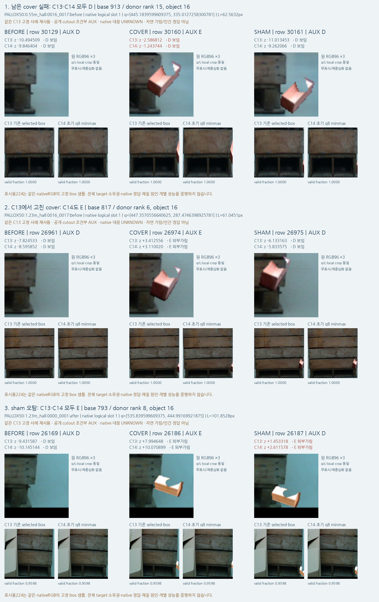

문맥 crop을 통일했지만,
외부 가림은 아직 해결되지 않았습니다
C14는 공개 학습 source의 문맥 범위를 실제 사용과 같은 초기8점의 min/max로 통일한 대조입니다. 현재 평가에서 목재 외부 가림은 8/29→9/29, 정사각형은 6/61→6/61입니다. 보임 정답은 599/616·531/531로 같습니다.
공개 source로만2,000회 학습했고 source 검증 손실로1,200회 시점을 동결했습니다. 현재 평가의 좌표·이미지 특징은 그대로 재사용했습니다. 현재 평가로 학습·normalizer·문턱·checkpoint·모델을 선택하지 않았고 PnP도 실행하지 않았습니다.
같은 평가 대상의 전체 비교
행은 사람[D,E], 열은 응답[D,hidden,U]입니다. paired D/E 목재645·정사592점이며 전체1,784슬롯과 분모가 다릅니다. 전체 factual U45·추가 U0, 비교 가능한 D/E에서 C14 U0입니다. 기존 모델은 실사 CAL 학습 이력이 있고 입력 경로도 다릅니다. C11/C12/C13/C14만 같은 저장1928특징을 사용합니다. 현재 자료는 과거 개발에 노출되어 새 blind holdout이 아닙니다.
C14는 최신 source 동결 모델입니다. 현재 평가에서 가장 좋은 모델로 고른 것이 아닙니다. 보이는 점 보존이 높아도 외부 가림90점 중75점을 놓치므로 목표 달성으로 볼 수 없습니다.
실제로 바뀐 범위
- 공개 원영상 문맥623개에서 T/Q 특징만 다시 계산했습니다.15,004개 저장 단위와46,108개 원행을 유지했습니다.
- 키포인트 위치q, 주변 crop 크기L, 주변 F/C/P 특징, local 유효성·원 라벨·split은 유지했습니다. 문맥이 같은13,560개 벡터는 전체를 그대로 재사용했습니다.
- 모델221,825개 파라미터, 초기화seed,2,000개 학습 배치,손실·optimizer·source선택기준·15개 검증 조건·문턱0은 C13과 같습니다.
- 현재 평가는 기존1,784×1,928 특징에 동결 head만 적용했습니다. 새 RGB/DINO/초기 추론/좌표 교정/PnP0입니다.
q가 q8범위 안에 포함되는 것은 범위 정의의 결과입니다. 대상과 모서리 대응이 맞았거나 좌표가 정확해졌다는 뜻은 아닙니다.
공개 가림 대조와 실제 crop
공개 VAL119쌍에서 가린 경우의 정답은 C13·C14 모두118개입니다. 단서를 보존한 SHAM 정답은117→116개입니다. source 검증 손실은0.032754→0.027326으로 낮아졌지만, 그것을 실사 가림 문제의 해결로 해석하지 않습니다.
기존에 고정한 공개3사례의 원 crop과 이전/새 문맥을 비교했습니다. 원 q·L·라벨을 옮기지 않았으며, 붙여넣기 AUX 대조는 자연 가림이나 native 모서리의 사람 정답과 다릅니다.

공개3사례 저장 대조 결과 · 공개194+62쌍 전체 비교 · 기존 고정9 실제 평가 crop(C13 당시 표시)
고정9사례의 C14 판정도 모두 C13과 같습니다. 성공·실패 역할이 유지된다는 뜻이며 전체 성능을 이9개로 추정하지 않았습니다.
C13→C14의 실제 판정 변화
@@TRANSITIONS@@
결과 변화는 보고용입니다. 현재 평가의 판정 변화로 문턱이나 다음 모델을 고르지 않습니다.
자기 가림·위치 오차와 남은 문제
자기 가림은 사용자 방침에 따라 초기 기하 경로로 별도 처리합니다. 이 head의 hidden 응답은 학습된 자기/외부 원인 분류가 아닙니다. 정사각형에는 사람S 정답이 없어 그 부분의 정확도를 주장하지 않습니다.
사람이 직접 클릭한 보임 reference와 초기점의 차이가3px 이하인 부분집합은 목재153/153·정사223/223을 보임으로 유지합니다. 이는 좌표 정확성을 모델이 인증했다는 뜻은 아닙니다. 가려진 E의 reference는 추정/미검증 좌표이므로 작은 q-r도 위치 gold로 해석하지 않습니다.
남은 핵심은 공개 source에서 배운 가림 규칙이 실제 대상 모서리의 가림으로 충분히 전이되지 않는다는 점입니다. 문맥 입력 차이 하나를 맞춘 것으로는 해결되지 않았습니다. 다음 작업은 공개 자연 가림의 teacher가 실제로 무엇을 감독하는지, 대상과 기대 단서가 연결되는지를 확인하는 것입니다. 현재 평가를 다시 학습 자료로 쓰지는 않습니다.